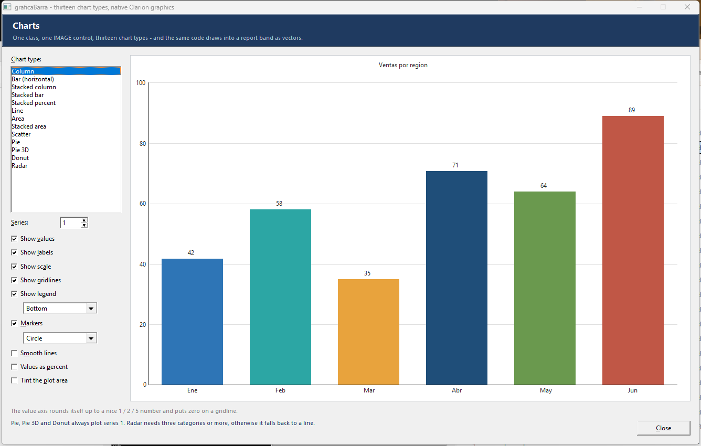
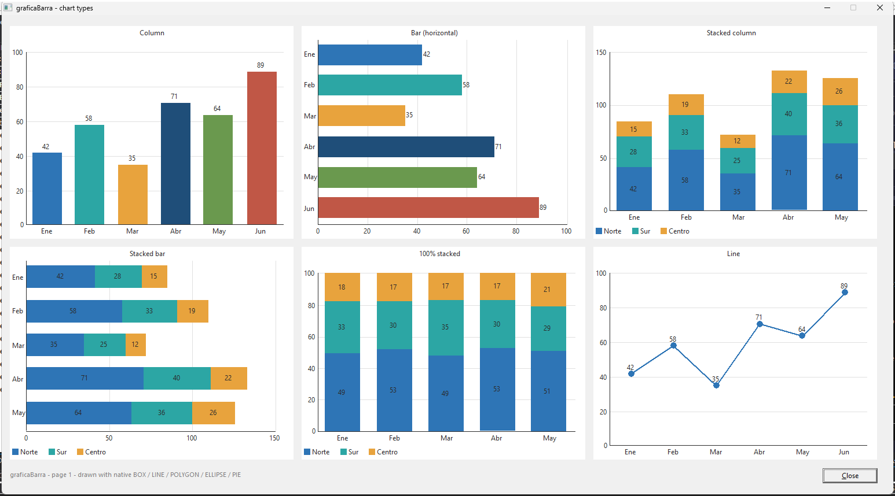
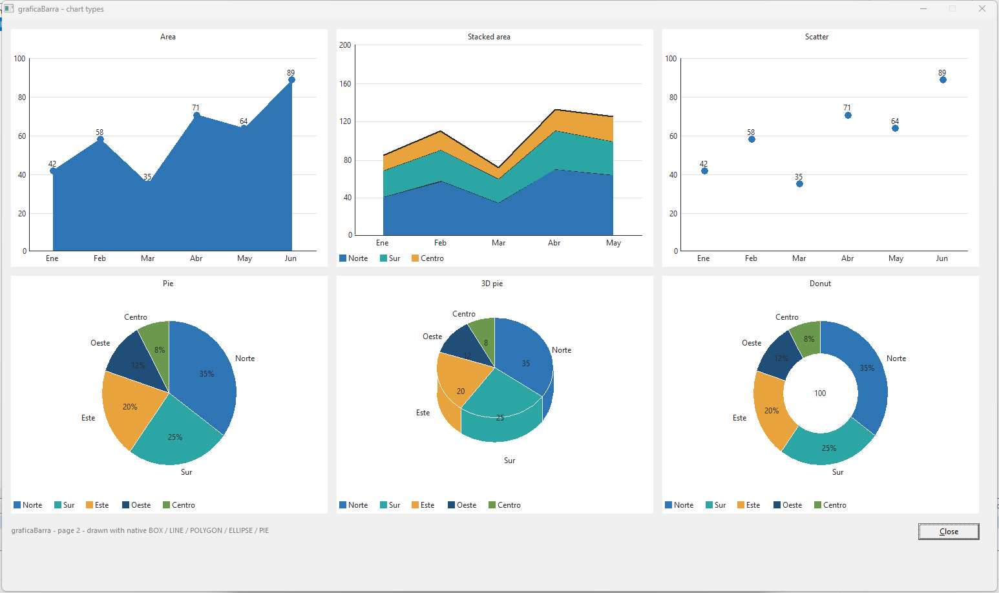
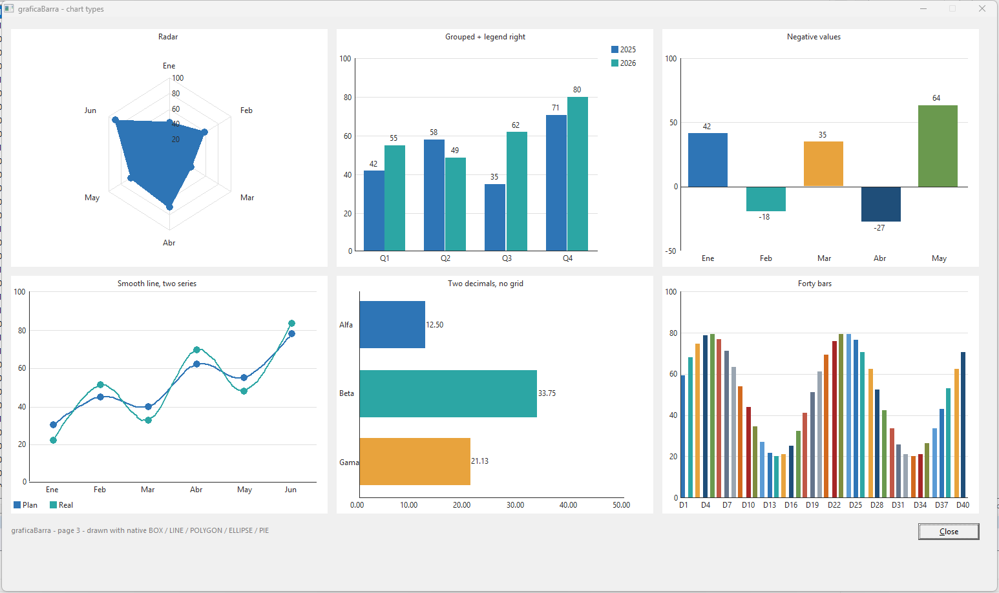
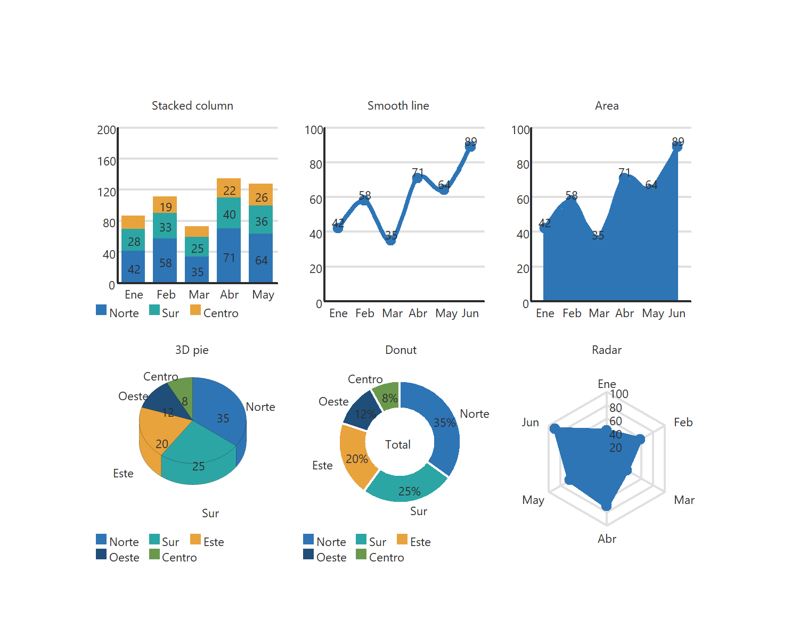

graficaBarra
Thirteen chart types for Clarion windows and reports — column, bar,
stacked, stacked percent, line, area, stacked area, scatter, pie, 3D pie, donut and radar — drawn entirely with
native BOX / LINE / POLYGON / ELLIPSE / PIE /
SHOW primitives. On a report the chart goes into the band as vector primitives — never a
bitmap — so PDF exports stay as small as possible.
Trece tipos de gráfico para ventanas e informes de Clarion — columnas,
barras, apiladas, apiladas al 100, líneas, área, área apilada, dispersión, pastel, pastel 3D, dona y radar —
dibujados por completo con las primitivas nativas BOX / LINE / POLYGON /
ELLIPSE / PIE / SHOW. En un informe el gráfico entra en la banda como
primitivas vectoriales — nunca un mapa de bits — así que los PDF salen lo más pequeños posible.
OverviewResumen
One self-contained ANSI class, GraficaBarraClass, holds up to 48 categories
across up to 8 series (label, value, color) plus the look — chart type, title, value/scale labels, legend,
markers, gridlines, gaps, colors, automatic or fixed scale — and renders itself wherever the current graphics
target is. One property, ChartType, picks the shape. Three template registrations drive it:
| Registration | Scope | What it does |
|---|---|---|
| graficaBarraGlobal | Application (Global → Extensions) | Adds INCLUDE('GraficaBarraClass.INC'),ONCE. Add it once; the other two require it. |
| graficaBarra | Procedure with a WINDOW | Draws the graph into an IMAGE control. Redraws on open and resize, and generates a
Refresh:<Object> routine that re-reads variable values. Add once per chart —
several charts per window are fine. |
| graficaBarraReport | Procedure with a REPORT | Draws the chart into the detail band at %BeforePrint under
SETTARGET(Report) using vector primitives. A placeholder control supplies only the
position and size, and is hidden at print time. Add once per chart — several charts on one
report are fine, and they follow the band down the page as it repeats, each with its own data
and its own scale. |
├─ graficaBarra.tpl — the template set (register this)
├─ GraficaBarraClass.inc — the class (config + prototypes)
└─ GraficaBarraClass.clw — the implementation (scale + drawing)
The thirteen types

| Pick this | Equate | What you get |
|---|---|---|
| Column | Chart:Column | Vertical bars. Several series sit side by side (grouped). |
| Bar (horizontal) | Chart:Bar | Bars running left to right, categories down the side. |
| Stacked column / Stacked bar | Chart:StackedCol · Chart:StackedBar | Series stacked into one bar per category, with each segment's value inside it. |
| Stacked percent | Chart:Stacked100 | Every stack fills the axis to 100 — share of the total, per category. |
| Line | Chart:Line | Straight or smooth (Catmull-Rom), with optional markers. |
| Area / Stacked area | Chart:Area · Chart:StackedArea | Filled POLYGON under the line; stacked bands for several series. |
| Scatter | Chart:Scatter | Markers only — circle, square or diamond. |
| Pie / Pie 3D | Chart:Pie · Chart:Pie3D | The Clarion built-in PIE, so it stays vector on a report too. 3D adds an edge depth. |
| Donut | Chart:Donut | Pie with a hole (10–90% of the diameter) and optional text in the middle. |
| Radar | Chart:Radar | Spider web: one spoke per category, filled for one series, outlined for several. |



Features: automatic "nice" scale (the maximum rounds up to 1, 2 or 5 × 10k, and when the
data crosses zero the axis steps in nice units so zero lands on a gridline) or a fixed
SetRange(min,max); negative values hang below the baseline; values on bars, points and
slices, optionally as a percentage; category labels that thin themselves out rather than collide;
scale numbers; gridlines; a legend at the bottom, top or right; up to 4 series from the prompts
(8 from code); per-category or per-series colors, or a 12-color professional palette; an optional painted
background and plot area. If the data list is left empty the chart draws sample data suited to its type
— a built-in self-test.
Una sola clase ANSI autosuficiente, GraficaBarraClass, guarda hasta 48 categorías
repartidas en hasta 8 series (etiqueta, valor, color) y además el aspecto — tipo de gráfico, título, etiquetas de
valor y escala, leyenda, marcadores, líneas de rejilla, separación, colores, escala automática o fija — y se dibuja
donde esté apuntando el destino gráfico actual. Una sola propiedad, ChartType, elige la forma.
La manejan tres registros de plantilla:
| Registro | Ámbito | Qué hace |
|---|---|---|
| graficaBarraGlobal | Aplicación (Global → Extensions) | Agrega INCLUDE('GraficaBarraClass.INC'),ONCE. Ponla una vez; las otras dos la necesitan. |
| graficaBarra | Procedimiento con WINDOW | Dibuja el gráfico en un control IMAGE. Se redibuja al abrir y al redimensionar, y genera
una rutina Refresh:<Objeto> que vuelve a leer los valores variables de las barras.
Agrégala una vez por gráfico — varios gráficos por ventana no son problema. |
| graficaBarraReport | Procedimiento con REPORT | Dibuja el gráfico en la banda de detalle en %BeforePrint, bajo
SETTARGET(Report), con primitivas vectoriales. Un control marcador aporta solo la
posición y el tamaño, y se oculta al imprimir. Agrégala una vez por gráfico — varios
gráficos en un informe no son problema, y acompañan a la banda al bajar por la página cada vez
que se repite, cada uno con sus datos y su escala. |
├─ graficaBarra.tpl — el conjunto de plantillas (registra este)
├─ GraficaBarraClass.inc — la clase (configuración + prototipos)
└─ GraficaBarraClass.clw — la implementación (escala + dibujo)
Los trece tipos
| Elige esto | Equate | Qué obtienes |
|---|---|---|
| Column | Chart:Column | Barras verticales. Varias series se colocan una al lado de otra (agrupadas). |
| Bar (horizontal) | Chart:Bar | Barras de izquierda a derecha, con las categorías al costado. |
| Stacked column / Stacked bar | Chart:StackedCol · Chart:StackedBar | Series apiladas en una sola barra por categoría, con el valor de cada tramo dentro. |
| Stacked percent | Chart:Stacked100 | Cada pila llena el eje hasta 100 — la parte del total de cada categoría. |
| Line | Chart:Line | Recta o suavizada (Catmull-Rom), con marcadores opcionales. |
| Area / Stacked area | Chart:Area · Chart:StackedArea | POLYGON relleno bajo la línea; bandas apiladas para varias series. |
| Scatter | Chart:Scatter | Solo marcadores — círculo, cuadrado o rombo. |
| Pie / Pie 3D | Chart:Pie · Chart:Pie3D | El PIE nativo de Clarion, así que también es vectorial en un informe. La 3D añade profundidad al canto. |
| Donut | Chart:Donut | Pastel con agujero (10–90% del diámetro) y texto opcional en el centro. |
| Radar | Chart:Radar | Telaraña: un radio por categoría, rellena con una serie y solo contorno con varias. |
Características: escala "bonita" automática (el máximo redondea hacia arriba a 1, 2 o 5 ×
10k, y cuando los datos cruzan el cero el eje avanza en pasos redondos para que el cero caiga
en una línea de rejilla) o un SetRange(min,max) fijo; los valores negativos cuelgan
por debajo de la línea base; valores sobre barras, puntos y porciones, opcionalmente en porcentaje;
etiquetas de categoría que se ralean solas en vez de estorbarse; números de escala; líneas de rejilla; una
leyenda abajo, arriba o a la derecha; hasta 4 series desde los prompts (8 desde código);
colores por categoría o por serie, o una paleta profesional de 12 colores; fondo y área de dibujo pintados
opcionalmente. Si dejas la lista de datos vacía, el gráfico dibuja datos de ejemplo adecuados a su tipo
— una autoprueba incorporada.
Install & registerInstalar y registrar
- Copy
GraficaBarraClass.incandGraficaBarraClass.clwto a folder on the Clarion redirection path — your app folder or\clarion12\libsrc\win. Keep them ANSI (not UTF-8), CRLF line ends. - Copy
graficaBarra.tplanywhere convenient (e.g.\clarion12\accessory\template\win) and register it: IDE → Setup → Template Registry → Register → pick the .tpl. - In your app: Global → Extensions → Insert → graficaBarraGlobal (it is also added automatically the first time you add one of the other two).
- Copia
GraficaBarraClass.incyGraficaBarraClass.clwa una carpeta del camino de redirección de Clarion — la carpeta de tu app o\clarion12\libsrc\win. Mantenlos en ANSI (no UTF-8), con finales de línea CRLF. - Copia
graficaBarra.tpldonde te resulte cómodo (por ejemplo\clarion12\accessory\template\win) y regístralo: IDE → Setup → Template Registry → Register → elige el .tpl. - En tu app: Global → Extensions → Insert → graficaBarraGlobal (también se agrega sola la primera vez que insertas una de las otras dos).
On a windowEn una ventana
- Put an
IMAGEcontrol on the window where the graph should live (no picture needed — it is just the canvas). - Procedure → Extensions → Insert → graficaBarra - Draw a chart on this window.
- Pick the IMAGE control, set a title, and define the bars on the Bars tab.
Each bar's value is either a literal number or a variable / field / expression. After data changes, call the generated routine:
! the bars re-read their variables/expressions, then the graph redraws
DO Refresh:Graph1
The graph redraws itself on window open and resize (the draw is POSTed as a private event so it runs after the ABC resizer settles). Multiple graphs per window each target their own IMAGE, so they never erase each other.
- Pon un control
IMAGEen la ventana donde deba ir el gráfico (no necesita imagen — es solo el lienzo). - Procedimiento → Extensions → Insert → graficaBarra - Draw a chart on this window.
- Elige el control IMAGE, pon un título y define las barras en la pestaña Bars.
El valor de cada barra es o un número literal o una variable / campo / expresión. Después de que cambien los datos, llama a la rutina generada:
! las barras releen sus variables/expresiones y el gráfico se redibuja
DO Refresh:Graph1
El gráfico se redibuja solo al abrir la ventana y al redimensionar (el dibujo se envía con POST como evento privado para que ocurra después de que el redimensionador de ABC se asiente). Varios gráficos en una ventana apuntan cada uno a su propio IMAGE, así que nunca se borran entre sí.
On a report — small-PDF vector outputEn un informe — salida vectorial, PDF pequeño
This is the reason graficaBarra exists: report graphs that export to the smallest possible PDF. Instead of rasterizing into an image, the template draws the graph straight into the band being printed with native vector primitives:
SETTARGET(MyReport, ?TheBand) ! the band holding the placeholder becomes the target RptGraph1.Paint(?GraphPlace) ! vector primitives at the placeholder's rectangle ?GraphPlace{PROP:Hide} = 1 ! the placeholder itself never prints SETTARGET()
Every bar is a filled BOX, pies are Clarion's own PIE, areas and radar webs are
POLYGONs, the axis and gridlines are LINEs and all text is SHOW —
these travel through the report engine (and the PDF output generator) as vector records, not pixels, so file
size stays tiny and the chart prints razor-sharp at any resolution. All thirteen types work here, not just
the bars:

SETTARGET is what
keeps them apart: it aims the drawing at one specific band. The template fills it in for you by working out
which band holds the placeholder, so a chart in a DETAIL, one in a second DETAIL
and one in a group FOOTER all land where they should. It needs the band to have a field equate
(USE(?SomeName)) — without one it falls back to a plain SETTARGET(report) and
says so in a comment in the generated source. Charts on a repeating band redraw per record, each with its own
data and its own auto-scale.Setup
- In the report designer, put a placeholder control in the DETAIL band sized where the graph
should print — an empty
IMAGEworks best (aBOXalso works). ItsAT()rectangle is the graph rectangle. - Procedure → Extensions → Insert → graficaBarraReport - Draw a chart on this REPORT.
- Pick the placeholder, define the bars (values are usually fields/expressions — they are evaluated for every record printed), done. The placeholder is hidden at print time by default so it never shows itself.
Esta es la razón de ser de graficaBarra: gráficos en informes que exportan al PDF más pequeño posible. En lugar de rasterizar a una imagen, la plantilla dibuja el gráfico directamente en la banda que se está imprimiendo con primitivas vectoriales nativas:
SETTARGET(MiInforme, ?LaBanda) ! la banda que contiene el marcador pasa a ser el destino RptGraph1.Paint(?GraphPlace) ! primitivas vectoriales en el rectángulo del marcador ?GraphPlace{PROP:Hide} = 1 ! el marcador en sí nunca se imprime SETTARGET()
Cada barra es un BOX relleno, los pasteles son el PIE propio de Clarion, las
áreas y la telaraña del radar son POLYGONs, el eje y la rejilla son LINEs y todo el
texto es SHOW — todo eso viaja por el motor de informes (y por el generador de PDF) como
registros vectoriales, no como píxeles, así que el archivo se queda diminuto y el gráfico se imprime nítido a
cualquier resolución. Y vale para los trece tipos, no solo para las barras:
SETTARGET es lo que
los mantiene separados: apunta el dibujo a una banda concreta. La plantilla lo rellena por ti deduciendo qué
banda contiene el marcador, así que un gráfico en un DETAIL, otro en un segundo
DETAIL y otro en un FOOTER de grupo caen todos donde deben. Necesita que la banda
tenga un field equate (USE(?Nombre)) — sin él vuelve a un SETTARGET(report)
simple y lo avisa con un comentario en el fuente generado. Los gráficos en una banda que se repite se
redibujan por registro, cada uno con sus datos y su escala automática.Puesta en marcha
- En el diseñador de informes, pon un control marcador en la banda DETAIL del tamaño que deba
tener el gráfico — un
IMAGEvacío va perfecto (unBOXtambién sirve). Su rectánguloAT()es el rectángulo del gráfico. - Procedimiento → Extensions → Insert → graficaBarraReport - Draw a chart on this REPORT.
- Elige el marcador, define las barras (los valores suelen ser campos/expresiones — se evalúan en cada registro que se imprime) y listo. El marcador se oculta al imprimir por defecto, así que nunca se ve.
Prompt referenceReferencia de prompts
General
| Prompt | Default | Notes |
|---|---|---|
| Disable this graph | off | Kills all generated code for this instance. |
| Object name | Graph<n> / RptGraph<n> | The local object's label — also names the Refresh: routine (window). |
| Image / placeholder control | — | Window: the IMAGE canvas. Report: the position/size placeholder in the detail band. |
| Hide the placeholder when printing | on | Report only. |
| Erase the placeholder before drawing (report only) | on | A report band keeps every primitive ever drawn into it, so a second chart painted over the same placeholder lands on top of the first — ClearAll() throws the data away but cannot un-draw ink. On, the chart BLANKs its own rectangle first (the old primitives leave the band, so the PDF gets smaller). Only the placeholder's rectangle is touched: other charts and the band's own controls are left alone. Turn it off for a deliberate overlay. |
| Band to draw into (report only) | blank | Blank = the template works it out from the report structure (the band that holds the placeholder, whether that is a DETAIL, a group HEADER/FOOTER or a FORM). Only name one here to override it. Charts must be aimed at their own band or they all pile into whichever band is printing — so if you have more than one chart, make sure each band has a field equate (USE(?SomeName)) in the report formatter. Without one the template falls back to the old behaviour and says so in a comment in the generated source. |
| Title text | empty | Centered over the chart. |
| Chart type | Column | The thirteen types above. Changing it changes nothing else — the same data draws as bars, a pie or a radar. |
| Number of series | 1 | 1 = a color per bar/slice, no legend needed. 2–4 = a color per series, a legend, and the extra value prompts appear on every data row. |
| Automatic scale | on | The gap between two gridlines is sized to the data (1/2/2.5/5/10 × 10k) and the axis runs to the first whole step past it — so a maximum of 113,376,143 gets an axis of 125,000,000, not 200,000,000, and zero always lands on a gridline. Untick for a fixed Minimum/Maximum. Scale/grid divisions is a ceiling, not an exact count: every line has to fall on a whole step. |
| Character width / height (report only) | 0 / 0 | 0 means 62 / 130 thousandths of an inch — a 9pt font on a THOUS report. Nudge them if your labels crowd or straggle. |
Look
Three tabs since v2.1 — the old single Look tab had thirty prompts and had stopped fitting on screen.
| Prompt | Default | Notes |
|---|---|---|
| Show values / decimals | on / 0 | The number on each bar, point or slice (above a positive bar, below a negative one, inside a stack segment). |
| Values as a percentage | off | Shows each value's share of the total instead of the value. Made for pie and donut. |
| Show labels | on | Category names: under the axis, beside a slice, or around a radar web. They thin out automatically when there is no room. |
| Show scale / decimals | on / 0 | Axis numbers at each division — down the left, or along the bottom for a horizontal bar. |
| Show gridlines / divisions | on / 5 | Lines across the plot; rings on a radar. |
| Show the axis and the zero line | on | The value axis plus the baseline through zero. |
| Show a legend / where | on / Bottom | Bottom, Top or Right. Drawn only when it says something: series names when there are 2+ series, slice names on a pie. Wraps onto up to three rows. |
Shapes
| Prompt | Default | Notes |
|---|---|---|
| Gap between bars | 30 | Percent of one category slot. With several series the remainder is split between them. |
| Line thickness / Smooth | 2 / off | Pen width for line, area and radar outlines. Smooth rounds the corners off with a Catmull-Rom curve. |
| Markers / shape / size | on / Circle / 0 | Dots on line and area charts (always drawn for Scatter). Size 0 = three quarters of the text height. |
| First slice starts at | 0 | Degrees clockwise from twelve o'clock (pie, 3D pie, donut). |
| 3D depth | 0 | Edge depth for Pie 3D; 0 = an eighth of the height. |
| Donut hole / middle text | 55 / empty | Hole as a percent of the diameter, and an optional caption in the middle. |
Text & colors
| Prompt | Default | Notes |
|---|---|---|
| Typeface | blank | The font for every label on the chart. Blank = whatever the window (or the report band) is using. |
| Size | 0 | Points; 0 = the target's own size. It also scales the layout, so the spacing follows the type and labels thin themselves out rather than colliding. This is the prompt to reach for to make a chart's text bigger or smaller. |
| Bold / Italic | off / off | Style. Left alone, the target's own style is kept. |
| Colors | near-black axis/text, light-gray grid | Optional painted background and plot area, plus an optional outline around every bar and slice (white looks good on a pie). All colors are Clarion BGR longs. |
Series
Only used when Number of series is 2 or more: a name (what the legend shows) and a color (automatic palette, or pick one) for each of up to four series.
Draw as (new in v2.1) is what makes a combo: it says whether that one series is drawn as Bars or as a Line, whatever the chart type says. Leave the sales series on As the chart type and set the trend series to Line, and the line is drawn over the bars — both read the same value axis, so the trend has to be in the same units as the bars. The line series takes no room in the category slot: with one bar series and one line the bars are full width, exactly as they are on a one-series chart. The legend keys a line series with a line and its marker rather than a block. The prompt appears on Column, Line and Scatter charts only — a stack has nothing to overlay, a horizontal bar chart has no vertical line painter, and a pie is not a cartesian chart at all. Left alone it emits nothing, so an application generated before v2.1 generates exactly the code it did before.
Values is Show values for one series only: As the chart, Show them or Hide them. It earns its keep on the same combo — switch the numbers on and both the bars and the trend line label every category, the bars from below and the line from above, over the same slots. Hiding them for the trend leaves the reading where it belongs. Note that a bar prints its number only if it fits over the bar, so on a narrow chart with large figures none appear even with the switch on.
Data
An ordered list — one row per bar, point or slice, left to right. Per row: Label, Value for series 1 (a literal number, or tick the box and give a variable / field / expression), a value for series 2, 3 and 4 when you asked for them (each is free text, so a number and a field name both work — blank counts as zero), and a Color when there is only one series: automatic palette (default) or an explicit color. Leave the whole list empty and the chart draws sample data suited to its type — a self-test.
General
| Prompt | Por defecto | Notas |
|---|---|---|
| Disable this graph | off | Elimina todo el código generado de esta instancia. |
| Object name | Graph<n> / RptGraph<n> | La etiqueta del objeto local — también da nombre a la rutina Refresh: (ventana). |
| Image / placeholder control | — | Ventana: el IMAGE que hace de lienzo. Informe: el marcador de posición/tamaño en la banda de detalle. |
| Hide the placeholder when printing | on | Solo informes. |
| Erase the placeholder before drawing (solo informe) | on | Una banda de informe conserva todas las primitivas que se hayan dibujado en ella, así que un segundo gráfico pintado sobre el mismo marcador cae encima del primero — ClearAll() tira los datos pero no puede des-dibujar la tinta. Activado, el gráfico hace BLANK de su propio rectángulo antes de dibujar (las primitivas antiguas salen de la banda, así que el PDF queda más pequeño). Solo se toca el rectángulo del marcador: los demás gráficos y los controles de la banda quedan intactos. Desactívalo para superponer a propósito. |
| Band to draw into (solo informe) | vacío | Vacío = la plantilla lo deduce de la estructura del informe (la banda que contiene el marcador, sea un DETAIL, un HEADER/FOOTER de grupo o un FORM). Solo indica una aquí para forzarla. Cada gráfico debe apuntar a su propia banda o todos se amontonan en la que esté imprimiéndose — así que si tienes más de un gráfico, dale a cada banda un field equate (USE(?Nombre)) en el formateador del informe. Sin él la plantilla vuelve al comportamiento anterior y lo avisa con un comentario en el fuente generado. |
| Title text | vacío | Centrado sobre el gráfico. |
| Chart type | Column | Los trece tipos de arriba. Cambiarlo no cambia nada más — los mismos datos se dibujan como barras, pastel o radar. |
| Number of series | 1 | 1 = un color por barra/porción, sin necesidad de leyenda. 2–4 = un color por serie, una leyenda, y aparecen los prompts de valor extra en cada fila de datos. |
| Automatic scale | on | El hueco entre dos líneas de rejilla se dimensiona según los datos (1/2/2,5/5/10 × 10k) y el eje llega hasta el primer paso entero que los pasa — así un máximo de 113.376.143 recibe un eje de 125.000.000 y no de 200.000.000, y el cero siempre cae en una línea. Desmárcalo para fijar Mínimo/Máximo. Scale/grid divisions es un techo, no una cantidad exacta: cada línea tiene que caer en un paso entero. |
| Character width / height (solo informe) | 0 / 0 | 0 significa 62 / 130 milésimas de pulgada — una fuente de 9pt en un informe THOUS. Ajústalos si las etiquetas se aprietan o se separan. |
Look
Tres solapas desde la v2.1 — la vieja solapa Look tenía treinta prompts y había dejado de entrar en pantalla.
| Prompt | Por defecto | Notas |
|---|---|---|
| Show values / decimals | on / 0 | El número en cada barra, punto o porción (encima de una barra positiva, debajo de una negativa, dentro del tramo de una pila). |
| Values as a percentage | off | Muestra la parte del total en vez del valor. Pensado para pastel y dona. |
| Show labels | on | Nombres de categoría: bajo el eje, junto a una porción o alrededor de la telaraña del radar. Se ralean solos cuando no hay sitio. |
| Show scale / decimals | on / 0 | Números del eje en cada división — a la izquierda, o abajo si la barra es horizontal. |
| Show gridlines / divisions | on / 5 | Líneas a lo ancho del área de dibujo; anillos en un radar. |
| Show the axis and the zero line | on | El eje de valores más la línea base del cero. |
| Show a legend / where | on / Bottom | Abajo, arriba o a la derecha. Solo se dibuja cuando aporta algo: los nombres de las series si hay 2 o más, o los de las porciones en un pastel. Se reparte en hasta tres filas. |
Shapes
| Prompt | Por defecto | Notas |
|---|---|---|
| Gap between bars | 30 | Porcentaje del hueco de una categoría. Con varias series, lo que queda se reparte entre ellas. |
| Line thickness / Smooth | 2 / off | Grosor del trazo de líneas, áreas y contornos del radar. Smooth redondea las esquinas con una curva Catmull-Rom. |
| Markers / shape / size | on / Circle / 0 | Puntos en líneas y áreas (siempre se dibujan en Scatter). Tamaño 0 = tres cuartos de la altura del texto. |
| First slice starts at | 0 | Grados en sentido horario desde las doce (pastel, pastel 3D, dona). |
| 3D depth | 0 | Profundidad del canto en Pie 3D; 0 = un octavo de la altura. |
| Donut hole / middle text | 55 / vacío | El agujero como porcentaje del diámetro, y un texto opcional en el centro. |
Text & colors
| Prompt | Por defecto | Notas |
|---|---|---|
| Typeface | en blanco | La fuente de todas las etiquetas del gráfico. En blanco = la que use la ventana (o la banda del informe). |
| Size | 0 | Puntos; 0 = el tamaño del destino. También escala la maquetación, así el espaciado sigue a la tipografía y las etiquetas se ralean solas en vez de pisarse. Es el prompt para agrandar o achicar el texto de un gráfico. |
| Bold / Italic | off / off | Estilo. Sin tocar, se conserva el del destino. |
| Colors | eje/texto casi negro, rejilla gris claro | Fondo y área de dibujo pintados opcionalmente, más un contorno opcional en cada barra y porción (el blanco queda bien en un pastel). Todos los colores son longs BGR de Clarion. |
Series
Solo se usa cuando Number of series es 2 o más: un nombre (lo que muestra la leyenda) y un color (paleta automática, o el que elijas) para cada una de hasta cuatro series.
Draw as (nuevo en v2.1) es lo que arma un combo: dice si esa serie se dibuja como Bars o como Line, diga lo que diga el tipo de gráfico. Dejá la serie de ventas en As the chart type y poné la serie de tendencia en Line, y la línea se dibuja encima de las barras — las dos leen el mismo eje de valores, así que la tendencia tiene que estar en las mismas unidades que las barras. La serie de línea no ocupa lugar en la ranura de la categoría: con una serie de barras y una de línea, las barras salen del ancho completo, igual que en un gráfico de una sola serie. La leyenda marca una serie de línea con una línea y su marcador, no con un bloque. El prompt aparece solo en Column, Line y Scatter — una pila no tiene nada que superponer, un gráfico de barras horizontales no tiene pintor de líneas verticales, y un pastel no es un gráfico cartesiano. Si no lo tocás no emite nada, así que una aplicación generada antes de la v2.1 genera exactamente el mismo código que antes.
Values es Show values para una sola serie: As the chart, Show them o Hide them. Se gana el lugar en el mismo combo — al encender los números, las barras y la línea de tendencia etiquetan cada categoría, las barras desde abajo y la línea desde arriba, sobre las mismas ranuras. Apagarlos en la tendencia deja la lectura donde corresponde. Ojo que una barra imprime su número solo si entra sobre la barra, así que en un gráfico angosto con cifras grandes no aparece ninguno aunque el interruptor esté encendido.
Data
Una lista ordenada — una fila por barra, punto o porción, de izquierda a derecha. Por fila: Label, Value de la serie 1 (un número literal, o marca la casilla y pon una variable / campo / expresión), un valor para las series 2, 3 y 4 cuando las pediste (cada uno es texto libre, así que valen tanto un número como el nombre de un campo — en blanco cuenta como cero), y un Color cuando solo hay una serie: paleta automática (por defecto) o un color explícito. Deja la lista entera vacía y el gráfico dibuja datos de ejemplo adecuados a su tipo — una autoprueba.
Changing it at run timeCambiarlo en ejecución
The object is plain procedure data — drive it from any embed:
Graph1.ChartType = Chart:Donut ! any of the thirteen, any time Graph1.ClearAll() ! start over (data AND series) Graph1.AddBar('Ene', Ene:Total) ! auto palette color Graph1.AddBar('Feb', Feb:Total, 04657C0h)! explicit BGR color Graph1.Title = 'Ventas 2026' Graph1.Percent = 1 ! label the slices with their share Graph1.DonutText = 'Total' ! caption in the hole Graph1.Draw(MyWindow, ?Graph) ! window redraw now ! several series - name them once, then one call per category: Graph1.ChartType = Chart:StackedCol Graph1.ClearAll() Graph1.AddSeries('Norte') ! series 1 (auto color) Graph1.AddSeries('Sur', 0A4A62Ch) ! series 2 (explicit) Graph1.AddCat('Ene', Nor:Ene, Sur:Ene) ! label + one value per series Graph1.AddCat('Feb', Nor:Feb, Sur:Feb) Graph1.Draw(MyWindow, ?Graph) ! or, if the data came from the template prompts: DO Refresh:Graph1 ! reload prompt data + redraw
SETTARGET(Report) ; RptGraph1.Paint(?Placeholder) ; SETTARGET() — or just let the
template's generated %BeforePrint code do it.El objeto es sencillamente un dato del procedimiento — manéjalo desde cualquier embed:
Graph1.ChartType = Chart:Donut ! cualquiera de los trece, en cualquier momento Graph1.ClearAll() ! empezar de cero (datos Y series) Graph1.AddBar('Ene', Ene:Total) ! color de la paleta automática Graph1.AddBar('Feb', Feb:Total, 04657C0h)! color BGR explícito Graph1.Title = 'Ventas 2026' Graph1.Percent = 1 ! etiquetar las porciones con su parte Graph1.DonutText = 'Total' ! texto dentro del agujero Graph1.Draw(MyWindow, ?Graph) ! redibujar la ventana ahora ! varias series - nómbralas una vez y luego una llamada por categoría: Graph1.ChartType = Chart:StackedCol Graph1.ClearAll() Graph1.AddSeries('Norte') ! serie 1 (color automático) Graph1.AddSeries('Sur', 0A4A62Ch) ! serie 2 (explícito) Graph1.AddCat('Ene', Nor:Ene, Sur:Ene) ! etiqueta + un valor por serie Graph1.AddCat('Feb', Nor:Feb, Sur:Feb) Graph1.Draw(MyWindow, ?Graph) ! o, si los datos vinieron de los prompts de la plantilla: DO Refresh:Graph1 ! recargar los datos del prompt y redibujar
SETTARGET(Report) ; RptGraph1.Paint(?Marcador) ; SETTARGET() — o simplemente deja
que lo haga el código %BeforePrint que genera la plantilla.GraficaBarraClass APIAPI de GraficaBarraClass
| Member | Meaning |
|---|---|
ChartType | The shape: Chart:Column, Chart:Bar, Chart:StackedCol, Chart:StackedBar, Chart:Stacked100, Chart:Line, Chart:Area, Chart:StackedArea, Chart:Scatter, Chart:Pie, Chart:Pie3D, Chart:Donut, Chart:Radar. |
AddBar(label, value [,color]) | Append a category with a series-1 value (max 48). Omit color for the auto palette. |
AddSeries(name [,color]) | Name a series (max 8) and return its number. Call once per series, before the data. |
AddCat(label, v1 [,v2..v8]) | Append a category with one value per series. |
SetValue(series, cat, value) · GetValue(series, cat) | Poke or read a single cell. |
ClearBars() · ClearAll() | Drop the categories; ClearAll drops the series names too. Both clear data only — neither can un-draw a chart that is already on the page. Painting clears the placeholder's rectangle for you (EraseFirst, on by default). |
SetRange(min, max) | Fixed value scale; sets AutoScale = 0. |
Demo() | Loads sample data suited to the current ChartType (self-test). |
Draw(window, ?image) | Window path: targets the IMAGE, clears it, paints. |
Paint(?feq [,windowMode]) | Paints at ?feq's rectangle into the current target. Mode 0 (default) = report: keep the band offset, no clear. |
Title | CSTRING(64), centered on top. |
ShowValues / ValueDP, ShowLabels, ShowScale / ScaleDP, ShowGrid / GridDivs, ShowAxis | Feature toggles + decimals/divisions. |
AutoScale, MinVal, MaxVal | Scale control (auto by default). |
ShowLegend / LegendPos | Key of the series (or of the slices on a pie): Legend:Bottom, Legend:Right, Legend:Top. |
ShowMarkers / MarkerShape / MarkerSize | Dots on lines and areas: Marker:Circle, Marker:Square, Marker:Diamond; size 0 = automatic. |
LineWidth / Smooth | Pen width for lines, areas and radar outlines; Smooth = 1 curves them. |
Percent | Label values with their share of the total instead of the value. |
StartAngle | Pie: degrees clockwise from twelve o'clock for the first slice. |
Depth3D | Chart:Pie3D edge depth (0 = automatic). |
DonutPct / DonutText / HoleColor | The hole as a percent of the diameter, an optional caption in it, and its fill (COLOR:None follows the plot/background color). |
ColorText | 1 (default) re-colors text with SETFONT(0,…) so TextColor is honoured — SHOW takes its color from the target's font, not from the pen. Set 0 to leave the target's own font alone. |
NSeries, SeriesName[], SeriesColor[] | The series table, if you would rather fill it directly. |
BarGapPct | Gap between category slots, percent of a slot (default 30). |
BackColor, PlotColor, AxisColor, GridColor, TextColor, BarBorderColor | Colors (BGR); COLOR:None = skip / same-as-fill. |
TextW, TextH | Text cell metrics override (0 = auto: dialog units on windows, thousandths of an inch on reports). Tune if your report font is much bigger/smaller than ~10pt. |
| Miembro | Significado |
|---|---|
ChartType | La forma: Chart:Column, Chart:Bar, Chart:StackedCol, Chart:StackedBar, Chart:Stacked100, Chart:Line, Chart:Area, Chart:StackedArea, Chart:Scatter, Chart:Pie, Chart:Pie3D, Chart:Donut, Chart:Radar. |
AddBar(label, value [,color]) | Añade una categoría con su valor de la serie 1 (máx. 48). Omite el color para usar la paleta automática. |
AddSeries(name [,color]) | Da nombre a una serie (máx. 8) y devuelve su número. Llámalo una vez por serie, antes de los datos. |
AddCat(label, v1 [,v2..v8]) | Añade una categoría con un valor por serie. |
SetValue(serie, cat, valor) · GetValue(serie, cat) | Escribe o lee una sola celda. |
ClearBars() · ClearAll() | Quita las categorías; ClearAll quita además los nombres de las series. Ambos limpian solo los datos — ninguno puede des-dibujar un gráfico que ya está en la página. Al pintar se borra el rectángulo del marcador (EraseFirst, activo por omisión). |
SetRange(min, max) | Escala de valores fija; pone AutoScale = 0. |
Demo() | Carga datos de ejemplo adecuados al ChartType actual (autoprueba). |
Draw(window, ?image) | Camino de ventana: apunta al IMAGE, lo limpia y pinta. |
Paint(?feq [,windowMode]) | Pinta en el rectángulo de ?feq sobre el destino actual. Modo 0 (por defecto) = informe: conserva el desplazamiento de la banda y no limpia. |
Title | CSTRING(64), centrado arriba. |
ShowValues / ValueDP, ShowLabels, ShowScale / ScaleDP, ShowGrid / GridDivs, ShowAxis | Interruptores de cada elemento + decimales/divisiones. |
AutoScale, MinVal, MaxVal | Control de la escala (automática por defecto). |
ShowLegend / LegendPos | Leyenda de las series (o de las porciones en un pastel): Legend:Bottom, Legend:Right, Legend:Top. |
ShowMarkers / MarkerShape / MarkerSize | Puntos en líneas y áreas: Marker:Circle, Marker:Square, Marker:Diamond; tamaño 0 = automático. |
LineWidth / Smooth | Grosor del trazo de líneas, áreas y contornos del radar; Smooth = 1 las curva. |
Percent | Etiqueta los valores con su parte del total en vez del valor. |
StartAngle | Pastel: grados en sentido horario desde las doce para la primera porción. |
Depth3D | Profundidad del canto en Chart:Pie3D (0 = automático). |
DonutPct / DonutText / HoleColor | El agujero como porcentaje del diámetro, un texto opcional dentro, y su relleno (COLOR:None sigue el color del área o del fondo). |
ColorText | 1 (por defecto) recolorea el texto con SETFONT(0,…) para que se respete TextColor — SHOW toma el color de la fuente del destino, no del lápiz. Ponlo en 0 para no tocar la fuente del destino. |
NSeries, SeriesName[], SeriesColor[] | La tabla de series, si prefieres rellenarla directamente. |
BarGapPct | Separación entre huecos de categoría, en porcentaje de un hueco (30 por defecto). |
BackColor, PlotColor, AxisColor, GridColor, TextColor, BarBorderColor | Colores (BGR); COLOR:None = omitir / igual que el relleno. |
TextW, TextH | Sustituye las medidas de la celda de texto (0 = automático: unidades de diálogo en ventanas, milésimas de pulgada en informes). Ajústalo si la fuente de tu informe es mucho mayor o menor que ~10pt. |
Auto color palettePaleta de colores automática
Bars without an explicit color cycle through eight professional colors (Clarion BGR longs):
| Color | BGR | |
|---|---|---|
| Steel blue | 0B6752Eh | |
| Teal | 0A4A62Ch | |
| Amber | 03DA3E8h | |
| Deep navy | 0794E1Fh | |
| Sage green | 04E996Ah | |
| Terracotta | 04657C0h | |
| Slate gray | 08B7464h | |
| Cool gray | 0B1A59Ah |
Las barras sin color explícito van rotando por ocho colores profesionales (longs BGR de Clarion):
| Color | BGR | |
|---|---|---|
| Azul acero | 0B6752Eh | |
| Verde azulado | 0A4A62Ch | |
| Ámbar | 03DA3E8h | |
| Azul marino profundo | 0794E1Fh | |
| Verde salvia | 04E996Ah | |
| Terracota | 04657C0h | |
| Gris pizarra | 08B7464h | |
| Gris frío | 0B1A59Ah |
TroubleshootingSolución de problemas
| Symptom | Cause / fix |
|---|---|
| "File not found: GraficaBarraClass.INC" at compile | The .inc/.clw are not on the redirection path — copy both beside the app or into \clarion12\libsrc\win. |
| Template will not register | The .tpl was re-saved as UTF-8 with BOM or with LF line ends — keep ANSI/CRLF. |
| Sample data appears instead of mine | The Data list is empty for that instance (that's the self-test). Add rows, or feed the object with AddBar() / AddCat() from an embed. |
| Window graph doesn't update after data changes | Call DO Refresh:<Object> — bars with variable values are only re-read there (and at window open). |
| Several charts on one report draw on top of each other | Each chart has to be aimed at its own band. The template does that automatically, but it needs the band to have a field equate — open the report formatter and give the band a USE(?SomeName). Check the generated source: you should see SETTARGET(report, ?YourBand). If it says plain SETTARGET(report) there is a comment right above it explaining why. |
| Report chart missing altogether | The placeholder must be in a band that actually prints, and the code runs at Before Printing Detail Section — so a chart in a group footer is painted before the details print and appears when the footer prints. |
| Only one chart can be added per procedure | You are on the v1 template. v2 marks both procedure extensions MULTI — re-register graficaBarra.tpl and restart the IDE. |
TextColor seems to be ignored | It was, in v1: SHOW takes its color from the current target's font, not from SETPENCOLOR. v2 sets it with SETFONT(0,…). If you preferred the old behaviour set ColorText = 0. |
Unknown identifier Chart:Area, or "Field not found: CHARTTYPE" | The app is compiling against the v1 GraficaBarraClass.INC. Copy the v2 .inc + .clw over the ones on your redirection path, then delete the obj folder — the compiler does not track include changes reliably. |
| Report text looks too big / small | Text metrics assume a 9pt band font on a THOUS report (62 × 130 thousandths of an inch). Nudge them with the Character width / height prompts, or set RptGraph1.TextW / TextH in an embed before printing. |
| Bars in a strange color | Clarion colors are BGR longs, not RGB — 0B6752Eh is steel blue. |
| Síntoma | Causa / solución |
|---|---|
| "File not found: GraficaBarraClass.INC" al compilar | El .inc/.clw no están en el camino de redirección — copia los dos junto a la app o dentro de \clarion12\libsrc\win. |
| La plantilla no se registra | El .tpl se volvió a guardar como UTF-8 con BOM o con finales LF — mantenlo en ANSI/CRLF. |
| Salen datos de ejemplo en vez de los míos | La lista Data está vacía en esa instancia (eso es la autoprueba). Agrega filas, o alimenta el objeto con AddBar() / AddCat() desde un embed. |
| El gráfico de la ventana no se actualiza al cambiar los datos | Llama a DO Refresh:<Objeto> — las barras con valores variables solo se releen ahí (y al abrir la ventana). |
| Varios gráficos en un informe se dibujan uno encima de otro | Cada gráfico tiene que apuntar a su propia banda. La plantilla lo hace sola, pero necesita que la banda tenga un field equate — abre el formateador del informe y dale a la banda un USE(?Nombre). Revisa el fuente generado: debe decir SETTARGET(report, ?TuBanda). Si dice solo SETTARGET(report), justo encima hay un comentario que explica por qué. |
| No sale ningún gráfico en el informe | El marcador tiene que estar en una banda que se imprima de verdad, y el código va en Before Printing Detail Section — así que un gráfico en un pie de grupo se pinta antes de los detalles y aparece cuando se imprime el pie. |
| Solo puedo agregar un gráfico por procedimiento | Estás con la plantilla v1. v2 marca las dos extensiones de procedimiento como MULTI — vuelve a registrar graficaBarra.tpl y reinicia el IDE. |
Parece que TextColor no hace nada | Así era en v1: SHOW toma el color de la fuente del destino actual, no de SETPENCOLOR. v2 lo pone con SETFONT(0,…). Si preferías el comportamiento anterior, pon ColorText = 0. |
Unknown identifier Chart:Area, o "Field not found: CHARTTYPE" | La app se está compilando contra el GraficaBarraClass.INC de v1. Copia el .inc + .clw de v2 sobre los del camino de redirección y luego borra la carpeta obj — el compilador no detecta bien los cambios en los includes. |
| El texto del informe se ve muy grande o muy pequeño | Las medidas de texto suponen una fuente de banda de 9pt en un informe THOUS (62 × 130 milésimas de pulgada). Ajústalas con los prompts Character width / height, o pon RptGraph1.TextW / TextH en un embed antes de imprimir. |
| Las barras salen de un color raro | Los colores de Clarion son longs BGR, no RGB — 0B6752Eh es azul acero. |